英語投稿内容と同じ構成を、日本語で確認するためのローカルページです。実機写真と演奏画面は掲載済みです。黄色い点線枠は、公開前にデータ採取画面と実演動画を追加する場所です。
一枚のアクリル板がAI楽器になる
ModalTouchは、400 × 300 × 5 mmのアクリル板を12の演奏エリアとして扱うAI楽器です。各エリアの裏にスイッチを並べる代わりに、中央付近へ固定した一つのKX134-1211加速度センサーだけで、すべての打撃振動を観測します。
Arduino UNO Qは、その一点で得た波形から打撃位置を推定し、対応するエリアの音を合成して鳴らします。楽器としての基本機能にカメラは不要です。センシング、AI推論、音声生成、学習データ採取、Webアプリ配信はすべてボード上で完結し、クラウド推論も必要としません。オプションのUVCカメラを接続すると、確率ヒートマップを実物の板へ重ねるAR的な表示をデモ用に追加できます。
楽器はこのセンシング方式の応用例の一つで、目的そのものではありません。空間情報のエンコードを板が、デコードをAIが担うため、ゲームや音楽だけでなく、アクセシブルな入力装置、インタラクティブ展示、家具にも同じ方法を使えます。産業分野では、手袋や水に強い密閉型の機械操作パネル、筐体やカバーへの衝撃位置の特定、センサーを並べられない面の位置監視などにも役立ちます。
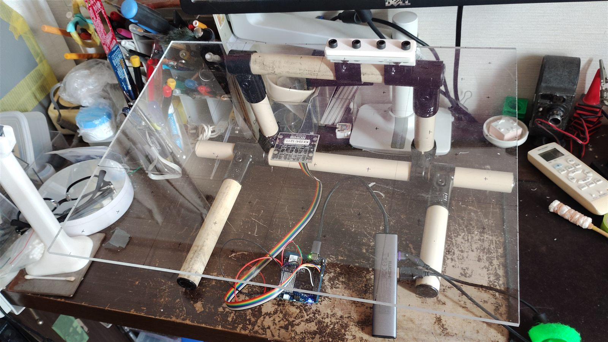
一点に圧縮された振動情報を、座標空間へ展開する
アクリル板は剛体のように一様には揺れません。打撃すると、固有の節・腹・周波数・位相・減衰を持つ複数の曲げモードが同時に励起されます。打つ位置が変わると、それぞれのモードへ配分される係数も変化します。打撃位置を p、固定センサー位置を s とすれば、観測波形は概念的に次のように表せます。
φn は n 番目の振動モードの形です。φn(p) は打点 p でそのモードがどれだけ強く励起されるか、φn(s) は固定したセンサー位置 s でそのモードがどれだけ強く観測されるかを表します。hn(t) はそのモード固有の周波数で減衰していく振動、a(s, t; p) はセンサー位置 s で測る加速度で、すべてのモードについて足し合わせます。s は動かないので、打点 p が変わると重み φn(p) の組み合わせだけが変わります。これが、一点の波形に打点位置の情報が残る理由です。なお、この式は打撃力の時間波形を省いた概念的な表現です。
センサーは動かなくても、打撃位置によってモードの混合比が変わります。これはエンコーダーとデコーダーの組として捉えられます。アクリル板は物理的なエンコーダーで、平面上の打点位置という2次元の情報を各振動モードへ分配します。さらに各モードはセンサー位置での振幅で重み付けされるため、板はフィルタとしても働き、面全体の情報を一本の時間信号へ圧縮します。ニューラルネットワークはその対になるデコーダーで、この物理的なエンコードを逆にたどり、一点の波形から60点の確率場とXY座標を復元します。これは到達時間差による三角測量ではなく、複数の同期センサーも必要としません。AIは付加機能ではなく、このセンシング方式を成立させる中心技術です。
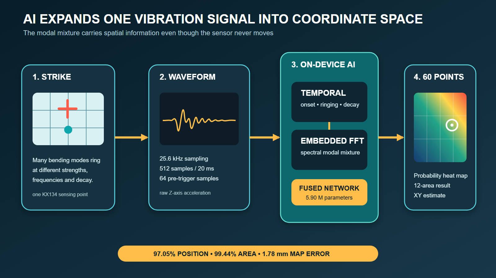
実機製作の前に、一点観測が成立するかを解析
実データを集める前に、一点の観測波形へ位置情報が残るかをシミュレーションしました。リポジトリには、低〜中次の曲げモードを扱うKirchhoff–Love薄板差分モデル、モード重ね合わせを行う3次元HEX8ソリッド有限要素モデル、さらにCalculiXによるメッシュ・固有振動数・打点・板厚の比較解析を収録しています。
シミュレーションではセンサー位置を中央付近に固定し、12エリアの中心を順に加振しました。共通カラースケール上で、星印が打点、ひし形がセンサーです。接着層、センサーボード質量、クランプ摩擦、接触力学は簡略化していますが、目的は異なる打点が一点観測でも異なるモード混合を作ることの確認です。この結果に基づいて実機設計とデータ採取計画を進めました。
アクリル板の固定位置は、あえて中心からずらしています。板の中心に対して対称に支持すると、振動モードの形も左右対称になり、ある打点とその鏡像の位置で、中央のセンサーにほぼ同じ波形が現れてしまいます。そこで、センサーは中央付近に置いたまま、固定具で上辺の x = 200～300 mm、100 × 20 mm の帯だけを挟んで固定しました。これで対称性が崩れ、鏡像の位置どうしでもモードの励起の強さが変わるため、どの位置もAIが見分けやすい固有の「振動指紋」を持つようになります。
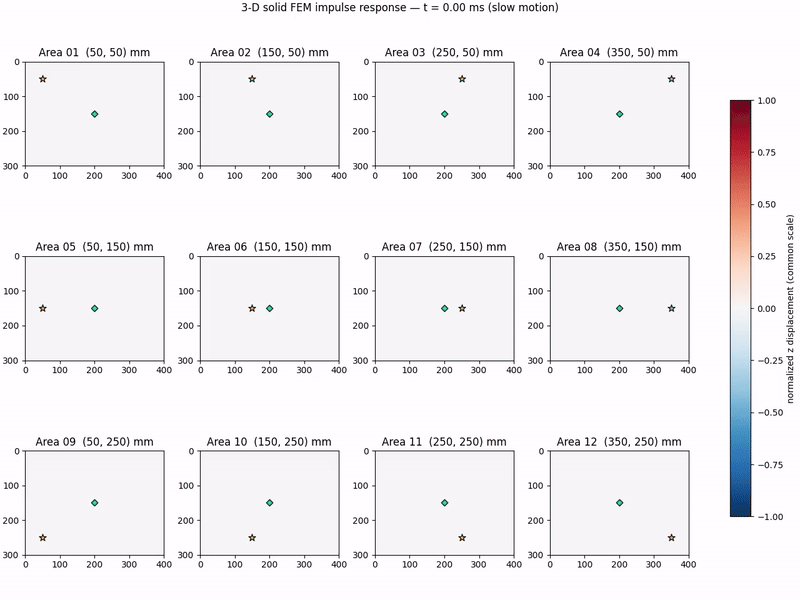
二つの計算領域へ、得意な仕事を分担
UNO QのリアルタイムMCUとLinux MPUへ役割を分けることで、高速で安定したセンシングと、表現力のあるAI・映像・音声処理を同時に実現します。
STM32U585側
- KX134-1211を3.3 V SPIで設定
- 5回平均を行わず、Z軸を25.6 kHzで取得
- DWTサイクルカウンターと直接GPIO SPIでジッターを抑制
- 打撃検出時に64点のプリトリガを保持し、512点・20 msを記録
- 64点×8チャンクへまとめてArduino Bridgeへ送信
QRB2210側
- 波形イベントの再構成と任意保存
- TensorFlow Lite推論と座標・エリア確率化
- （オプション）UVCカメラの取得とストリーミング
- FluidSynth音源を44.1 kHz WAVとして生成・キャッシュ
- 採取・位置推論・演奏ページをWi-Fi配信
決定論的な高レート取得をセンサーの近くに置き、Linux側のメモリと計算能力を空間推論へ使います。全体は一つのArduino App Labアプリとして構成し、電源投入後に自動起動します。
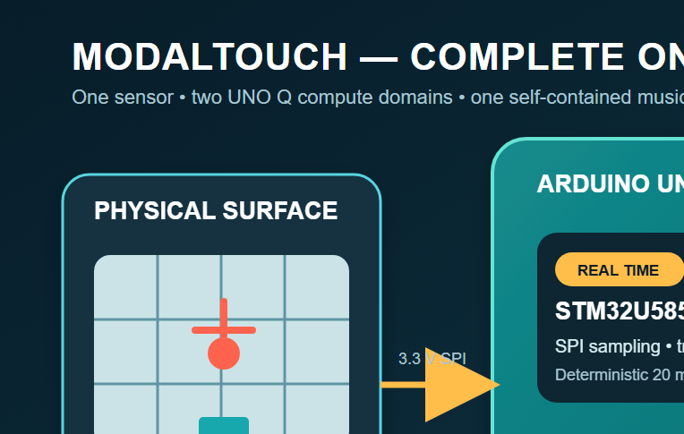
±32 g・25.6 kHzの加速度センサーをSPI接続
この方式には高速サンプリングが不可欠です。一点の波形から打点を見分けるには、打撃直後の立ち上がりと、位置によって混合比が変わる高い周波数のモード成分を捉える必要があります。KX134-1211は最大25.6 kHzで出力できるため、20 msのイベントごとに12.8 kHz（ナイキスト周波数）までの成分と、打撃の最初の数ミリ秒を記録できます。モーション検出向けの一般的な数百Hzの出力レートでは、60位置を見分けるためのモード混合の多くが折り返し歪みで失われてしまいます。
KX134-1211は±32 g、25.6 kHzで動作させます。3.3 Vデバイスなので、電源へ5 Vを接続してはいけません。専用の基板は使わず、センサー基板のキー付き2 × 7ケーブルをジャンパー線でUNO Qのピンヘッダーへ直接つなぎます。使用する信号は次のとおりです。
- VDD、IO_VDD → UNO Q 3.3 V
- GND → GND
- nCS → D10 / SS
- SDI → D11 / COPI
- SDO → D12 / CIPO
- SCLK → D13 / SCK
- INT1、INT2 → D2、D3（診断用）
リポジトリにはコネクターの向き、1番ピンの目印、ケーブル色、導通確認箇所を記載しています。センサーを取り付ける前に、必ず電源を切った状態で導通を確認します。
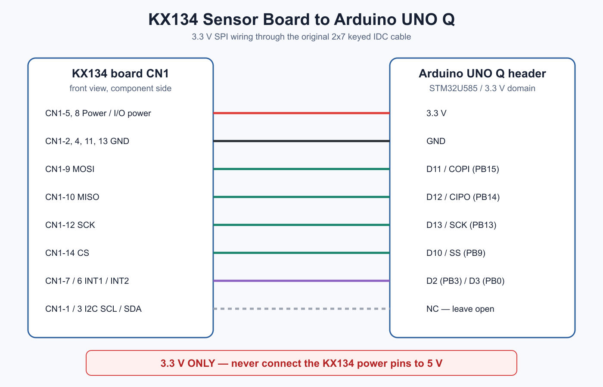
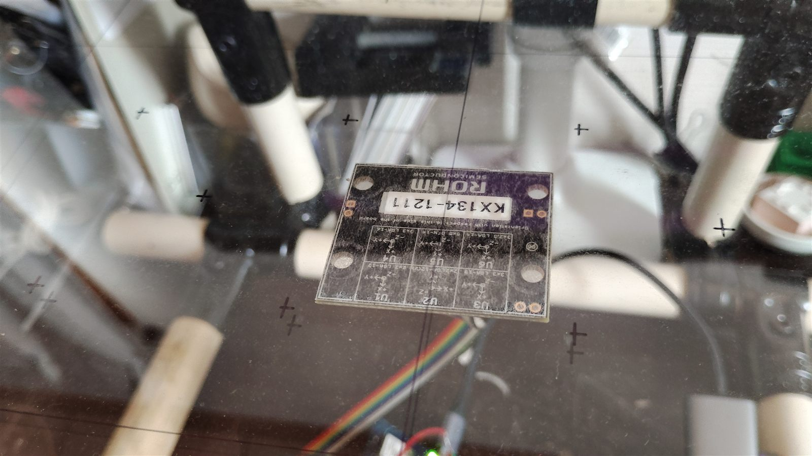
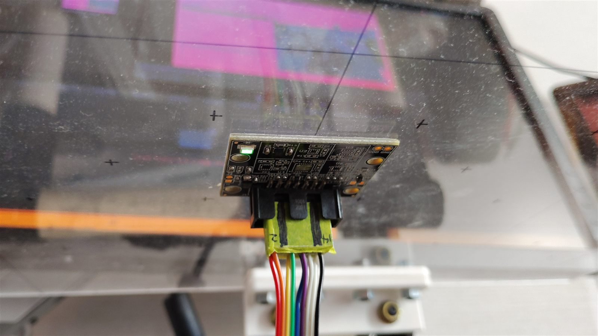
UNO Qには安定した5 V / 3 A電源を供給します。デモ用のカメラ表示を使う場合は、外部給電対応USB-Cハブ経由で標準UVCカメラを接続します。カメラはUNO Qから公式App Lab video brick経由で直接取得します。
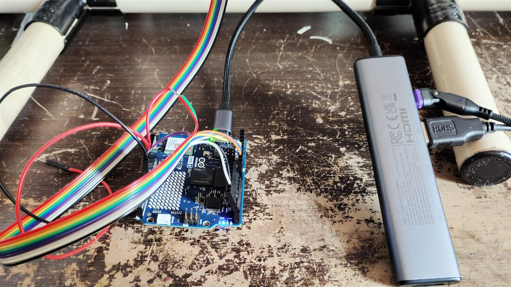
マレット
演奏には自作のマレットを使います。木製の丸棒の先端へ柔らかい芯を巻き、輪ゴムで固定しました。硬い打面で板を叩くと高域成分と跳ね返りが強くなるため、適度に柔らかい先端で打撃波形を安定させています。学習データも同じマレットで採取しています。
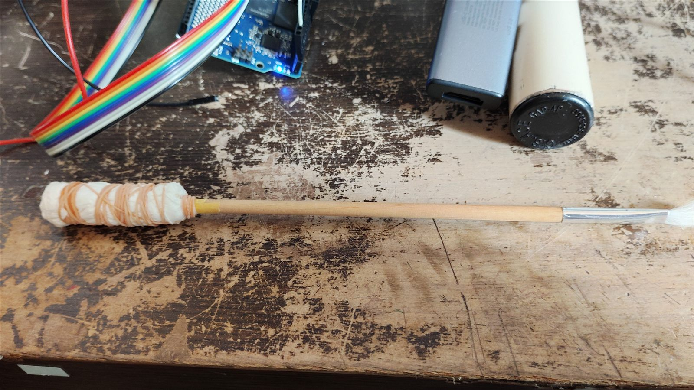
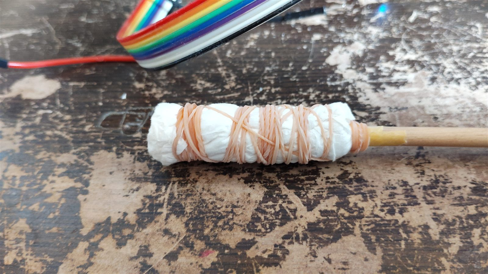
連続面を学ぶための60アンカー
4 × 3の格子は、12個の100 × 100 mm演奏エリアで構成されます。各エリアから中心1点と四隅寄り4点を採取し、合計60個の空間アンカーを作ります。手作業で再現可能な採取方法を保ちながら、各エリア内部の座標変化を学習できます。
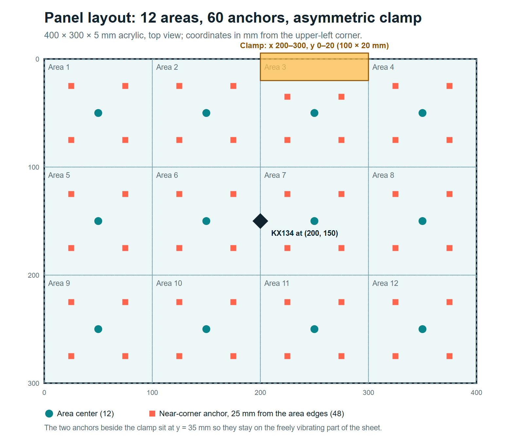
現在のデータセットは、複数セッション、異なる打撃強度、パネルの再固定を含む7,132打点です。似た波形をランダムに混ぜるのではなく、収録セッションを丸ごと分離しています。
検証と独立テストには、それぞれ中央12点の収録セッションと周辺48点の収録セッションを割り当てています。これにより、全60位置を評価しながら、イベントや同一セッションの漏洩を防いでいます。
時間波形と周波数特徴をモデル内部で融合
各TensorFlow Liteモデルは同じ60位置の確率分布を出力します。透過ヒートマップ、最尤パネル、12エリアの棒グラフはすべてこの一つの分布から計算するため、画面間で結果が食い違いません。確率重み付き座標は滑らかな疑似XY回帰として利用し、別の高容量直接XYヘッドでも連続回帰を検証します。
| モデル | パラメータ | FP16 | 60位置 | 12エリア | MAP誤差 | Expected XY |
|---|---|---|---|---|---|---|
| 時間波形CNN | 約108万 | 2.17 MB | 95.45% | 99.36% | 2.63 mm | 2.73 mm |
| FFT hybrid standard | 168万 | 3.38 MB | 96.77% | 99.20% | 2.13 mm | 2.70 mm |
| FFT hybrid large（採用） | 590万 | 11.82 MB | 97.05% | 99.44% | 1.78 mm | 1.76 mm |
| 時間＋大型FFT ensemble | 698万 | 14.01 MB | 97.01% | 99.44% | 1.89 mm | 1.86 mm |
大型FFTモデルは、生の512点を入力し、モデル内部でベースライン除去、振幅正規化、Hann窓、実FFTを実行します。時間枝は立ち上がり・残響・減衰を、周波数枝はモードのスペクトル混合を学習します。検証データだけで重みを決めたアンサンブルも試しましたが、独立テストでは大型FFT単体の方がわずかに良かったため、より単純な単体モデルを採用しました。
演奏に必要な応答性をUNO Q上で確保
すべてのモデルはUNO Qの起動時に一度だけ読み込んでウォームアップするため、打撃のたびにモデルの読み込みや初期化を待つことはありません。同じオンデバイス処理系では、より小さな候補モデルのwarm推論がQRB2210上で約4～6 msで、20 msの取得窓よりも十分に短い時間です。
取得窓は20 msで、64点×8のパック転送、イベント駆動配信、音源キャッシュにより、推論以外の待ち時間も減らしています。
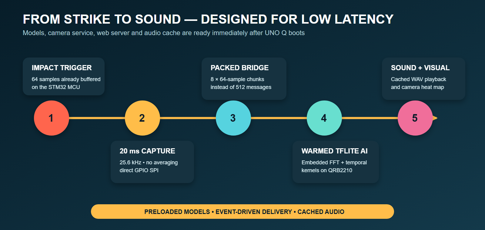
オプション：確率分布を実物のアクリル面へ重ねる
カメラ表示は、楽器の基本機能ではなくプレゼンテーション用に追加したオプション機能です。カメラがなくても、打点推定、エリア判定、発音はすべて動作します。カメラを使うと、演奏面そのものに次に叩く場所を示したり、結果を重ねて見せたりできるため、ゲーム性の追加や演奏の教示といったAR/MR的な使い方にも広げられます。
UNO QはUVCカメラ映像を配信し、Linuxが /dev/videoN を振り直した場合も自動復帰します。ユーザーはアクリル板上の8点を指定し、透視変換で60位置の確率場を実面へ合わせます。透過セル、12エリア格子、勝者の輪郭、推定座標をカメラ映像へ直接表示します。カメラもUNO Qアプリの一部であり、別の推論装置ではありません。
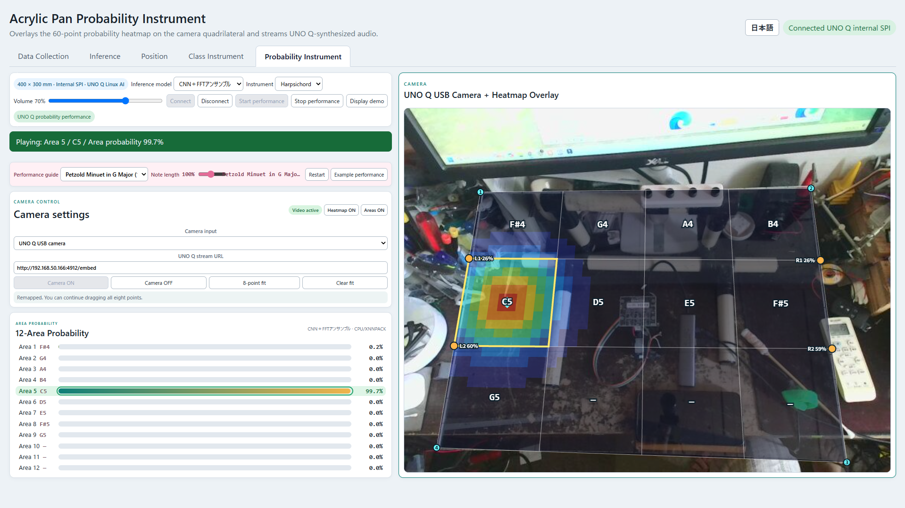
楽器音もUNO Qで生成して配信
UNO Q上のFluidSynthがGeneralUser GS 2.0.3 BETAを44.1 kHzでレンダリングします。5種類の楽器音色と楽曲ガイドモードを用意し、生成済みの音をWAVとしてキャッシュします。ブラウザはUNO Qから受け取った音をデコードして再生するだけで、音源選択と合成はボード側に残ります。
SoundFont: S. Christian Collins, “GeneralUser GS SoundFont, rendered on Arduino UNO Q with FluidSynth.”
演奏教示機能
演奏補助モードを使うと、この楽器は音楽を教える道具にもなります。曲を選ぶと、12エリアがその曲で使う音だけに低い順で割り当て直されます。画面では次に叩くエリアと、その次のエリア（薄い色）を強調し、次の音名・エリア番号・曲の進み具合を表示します。AIが正しいエリアへの打撃を判定したときだけ次へ進むため、一打ごとにセンシングの全工程が試されます。「手本演奏」ボタンを押すと、楽譜どおりのリズムとテンポでUNO Qが旋律を先に演奏するので、聴いてから演奏できます。この機能はWeb画面だけで動作し、オプションのカメラを使うと、同じ「次」「その次」の目印をアクリル板の上へAR的に重ねて表示できます。自由演奏では、12エリアがC～Bの半音階になります。
対応曲（いずれも16小節の旋律）：
- エリーゼのために（ベートーヴェン）
- 歓喜の歌（ベートーヴェン）
- メヌエット ト長調（ペツォールト）
- 子守歌 作品49-4（ブラームス）
- アメイジング・グレイス（伝承曲）
- オールド・ラング・サイン（伝承曲）
- フレール・ジャック（伝承曲）
- コロベイニキ（ロシア民謡）
電源投入から演奏まで
- 400 × 300 × 5 mmのアクリル板を、資料どおりの形状で固定します。
- KX134-1211を中央付近へ、向きと機械結合を再現できる方法で取り付けます。
- キー付き変換ケーブルを製作し、電源を切ったまま全信号の導通を測ります。
- UNO Qへ5 V / 3 A電源を接続します（カメラ表示を使う場合は、外部給電USB-CハブとUVCカメラも接続）。
- Arduino App Labでプロジェクトを開き、UNO Qへ配備します。
- 再起動後、healthページで
WHO_AM_I = 0x46、sensor_ready = true、25.6 kHz取得を確認します。 - 同じWi-Fi上の端末から演奏ページを開きます。
- 音声制限を解除するため演奏開始を一度押し、12エリアを打撃します。
- （オプション）カメラ表示を使う場合は、8点カメラ位置合わせを実行します。
- 新規データ採取時はラベル付きセッションを開始し、各波形を確認して不採用イベントだけを削除します。
部品表
ソースと再現資料
Arduino App Lab構成、STM32取得ファームウェア、Linux推論サービス、学習済みモデル、Web UI、テスト、シミュレーション、BOM、配線資料を公開します。
https://github.com/airpocket-soundman/acrylic_pan_uno_q
このプロジェクトの意味
ModalTouchが示すのは、「物理構造に空間情報を振動モードとしてエンコードさせ、保護された一点で圧縮された信号を取得し、通常ならセンサー配列が必要な空間状態をエッジAIでデコードする」という汎用的なセンシング方法です。この「物理エンコーダー＋AIデコーダー」の考え方はゲームや音楽に限らず、パネル、筐体、机、機械のカバーを位置を感知するセンサーに変え、HMI、検査、衝撃監視といった産業用途にも応用できます。物理面は単純なまま、エリア、信頼度判定、表示、音の振る舞いをソフトウェアで定義できます。UNO Qは、この逆問題をオフライン解析ではなく、演奏可能なリアルタイム体験として成立させます。